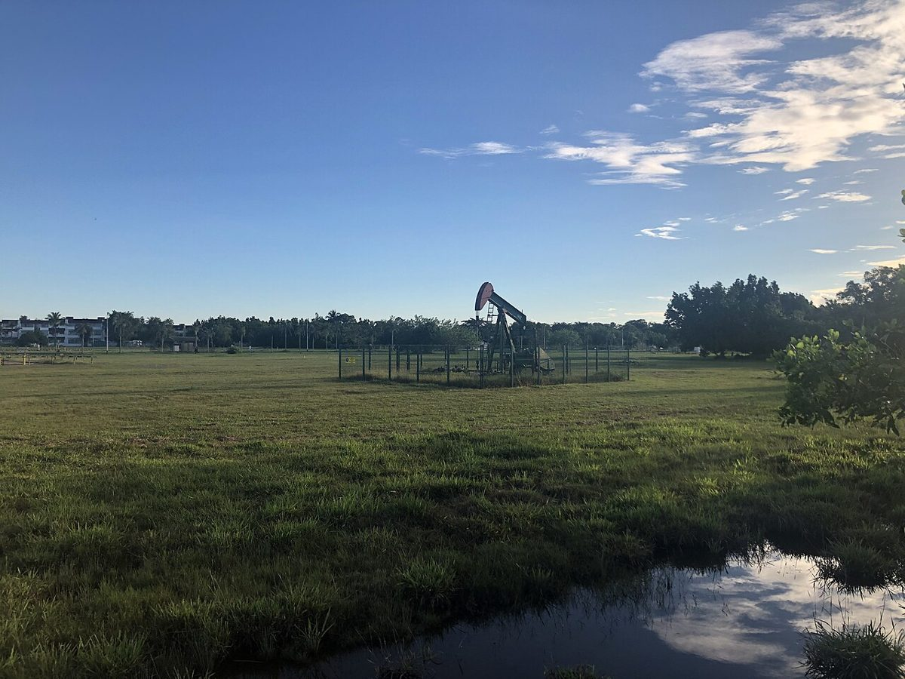

EIA perkirakan Brent bertahan dekat US$100 sampai akhir 2026, India larang ekspor "black mass" baterai lithium-ionEIA sees Brent staying near US$100 through end-2026, India bans exports of lithium-ion battery "black mass"
Badan Informasi Energi AS (EIA) dalam Short-Term Energy Outlook November memproyeksikan rata-rata harga minyak Brent US$97,44 per barel pada 2026 dan US$85,78 pada 2027. India melarang ekspor black mass, bubuk hasil cacahan baterai bekas yang mengandung lithium, kobalt, dan nikel, untuk memperkuat daur ulang dalam negeri.The US Energy Information Administration (EIA), in its November Short-Term Energy Outlook, projects Brent crude to average US$97.44 per barrel in 2026 and US$85.78 in 2027. India banned exports of black mass, the powder from shredded used batteries containing lithium, cobalt and nickel, to strengthen domestic recycling.

Poin utamaKey points
- EIA STEO (rilis 10/11): proyeksi rata-rata Brent US$97,44/barel untuk 2026 dan US$85,78 untuk 2027; WTI US$88,29 (2026) dan US$80,54 (2027).
- EIA memperkirakan Brent bertahan di sekitar US$100/barel sampai akhir 2026, lalu turun bertahap ke rata-rata US$77 pada kuartal IV 2027 seiring pulihnya stok minyak global.
- Pemicu menurut EIA: stok global turun, serangan terhadap kapal tanker di Teluk Persia, kapasitas pengiriman terbatas, dan biaya transportasi naik. EIA juga menaikkan proyeksi harga solar AS 2027 menjadi US$5,03 per galon (12% lebih tinggi dari prakiraan bulan lalu).
- India (DGFT, Kementerian Perdagangan) mengubah kebijakan ekspor black mass baterai lithium-ion dari "Free" menjadi "Prohibited", berlaku langsung sampai ada perintah lebih lanjut.
- Tujuannya memperkuat kapasitas daur ulang baterai domestik dan mengamankan pasokan mineral kritis. Pemerintah India menilai kapasitas pengolahan black mass di dalam negeri masih terbatas.
- EIA STEO (released 10/11): Brent projected to average US$97.44/barrel in 2026 and US$85.78 in 2027; WTI US$88.29 (2026) and US$80.54 (2027).
- The EIA expects Brent to stay around US$100/barrel through the end of 2026, then gradually fall to an average of US$77 in Q4 2027 as global oil inventories recover.
- Drivers according to the EIA: falling global inventories, attacks on oil tankers in the Persian Gulf, constrained shipping capacity and higher transport costs. The EIA also raised its 2027 US diesel price forecast to US$5.03 per gallon (12% higher than last month's forecast).
- India (DGFT, Commerce Ministry) changed the export policy for lithium-ion battery black mass from "Free" to "Prohibited", effective immediately until further orders.
- The aim is to strengthen domestic battery recycling capacity and secure critical mineral supplies. The Indian government says domestic black mass processing capacity is still limited.
Badan Informasi Energi AS (Energy Information Administration/EIA) merilis Short-Term Energy Outlook (STEO) edisi November pada 10 November 2026. Dalam tabel prakiraannya, EIA memproyeksikan rata-rata harga spot minyak Brent US$97,44 per barel untuk 2026 dan US$85,78 untuk 2027. Untuk minyak West Texas Intermediate (WTI), proyeksinya US$88,29 per barel pada 2026 dan US$80,54 pada 2027.
Menurut EIA, harga minyak mentah naik tiga bulan berturut-turut hingga Oktober karena stok global yang menurun, serangan terhadap kapal tanker di Teluk Persia, kapasitas pengiriman yang terbatas, dan biaya transportasi yang lebih tinggi. EIA memperkirakan Brent bertahan di sekitar US$100 per barel sepanjang sisa tahun ini, lalu turun bertahap ke rata-rata US$77 per barel pada kuartal IV 2027 seiring stok minyak global yang terkuras mulai terisi kembali.
EIA juga menaikkan proyeksi harga BBM di AS untuk tahun depan: harga eceran solar rata-rata US$5,03 per galon pada 2027, 12% lebih tinggi dari prakiraan bulan lalu, dan bensin US$3,73 per galon, sekitar 5% lebih tinggi. EIA mencatat input model ditetapkan pada 5 November, sehingga peristiwa setelah tanggal itu belum diperhitungkan.
Di India, Direktorat Jenderal Perdagangan Luar Negeri (DGFT) di bawah Kementerian Perdagangan pada Selasa (10/11) melarang ekspor limbah dan skrap baterai, termasuk black mass baterai lithium-ion, berlaku segera "sampai ada perintah lebih lanjut", menurut Business Standard. Kebijakan ekspor untuk produk dengan kode ITC (HS) 85491400 itu diubah dari "Free" menjadi "Prohibited".
Black mass adalah bubuk hasil cacahan baterai lithium-ion bekas yang mengandung material berharga seperti lithium, kobalt, dan nikel, yang bisa diambil kembali untuk membuat baterai baru. Menurut Business Standard, pemerintah India pada Oktober menyebut kapasitas pengolahan black mass di dalam negeri masih terbatas, sehingga sebagian diekspor tanpa mineral berharganya diambil. India juga punya skema insentif ₹1.500 crore untuk daur ulang mineral kritis yang diluncurkan September.
The US Energy Information Administration (EIA) released the November edition of its Short-Term Energy Outlook (STEO) on 10 November 2026. In its forecast tables, the EIA projects the Brent crude spot price to average US$97.44 per barrel in 2026 and US$85.78 in 2027. For West Texas Intermediate (WTI), the projections are US$88.29 per barrel in 2026 and US$80.54 in 2027.
According to the EIA, crude oil prices rose for a third consecutive month in October due to falling global inventories, attacks on oil tankers in the Persian Gulf, constrained shipping capacity and higher transportation costs. The EIA expects Brent to stay near US$100 per barrel for the rest of this year, then gradually fall to an average of US$77 per barrel in Q4 2027 as depleted global oil inventories build again.
The EIA also raised its US fuel price forecasts for next year: retail diesel averaging US$5.03 per gallon in 2027, 12% higher than last month's forecast, and gasoline US$3.73 per gallon, about 5% higher. The EIA notes model inputs were finalized on 5 November, so events after that date are not accounted for.
In India, the Directorate General of Foreign Trade (DGFT) under the Commerce Ministry on Tuesday (10/11) prohibited exports of battery waste and scrap, including lithium-ion battery black mass, with immediate effect "until further orders", according to Business Standard. The export policy for products under ITC (HS) code 85491400 was changed from "Free" to "Prohibited".
Black mass is the powder produced by shredding used lithium-ion batteries; it contains valuable materials such as lithium, cobalt and nickel that can be recovered to make new batteries. According to Business Standard, the Indian government said in October that domestic black mass processing capacity remains limited, so some material is exported without its valuable minerals being recovered. India also has a ₹1,500-crore incentive scheme for critical mineral recycling launched in September.
Kenapa pentingWhy it matters
Harga minyak tinggi menekan inflasi global, yang ikut membuat bank sentral menahan atau menaikkan suku bunga, dan ini berpengaruh ke aset berisiko termasuk crypto. Kebijakan India soal black mass relevan bagi Indonesia sebagai produsen nikel besar, karena persaingan mengamankan bahan baku baterai kendaraan listrik makin ketat.High oil prices push up global inflation, which leads central banks to hold or raise interest rates, and that affects risk assets including crypto. India's black mass policy is relevant for Indonesia as a major nickel producer, as competition to secure raw materials for electric vehicle batteries intensifies.
Proyeksi EIA bisa berubah cepat mengikuti situasi di Timur Tengah; EIA sendiri menyebut prakiraan ini belum memperhitungkan peristiwa setelah 5 November. Langkah India menunjukkan makin banyak negara menahan bahan baku baterai di dalam negeri, mirip kebijakan hilirisasi nikel Indonesia. Ini interpretasi, bukan prediksi harga.EIA projections can change quickly with the situation in the Middle East; the EIA itself says this forecast does not account for events after 5 November. India's move shows more countries are keeping battery raw materials at home, similar to Indonesia's nickel downstreaming policy. This is interpretation, not a price prediction.
Foto: pumpjack sumur minyak di Brunei, Oktober 2020 (DeltaSquad833, CC BY-SA 4.0, Wikimedia Commons). Foto ilustrasi.Photo: oil well pumpjack in Brunei, October 2020 (DeltaSquad833, CC BY-SA 4.0, Wikimedia Commons). Illustrative photo.
SumberSources
- EIA: Short-Term Energy Outlook, November 2026 (rilis 10 Nov 2026)
- EIA: STEO Table 2, harga energi (PDF)
- Business Standard: Centre bans export of battery waste, including lithium-ion black mass (11 Nov 2026)
- The Hindu: Govt prohibits export of unsorted lithium-ion battery waste, scrap
Ikuti COIN BRO diFollow COIN BRO on Telegram
Dapatkan berita seperti ini lebih cepat di channel kami. Gratis.Get news like this faster on our channel. Free.
Bukan saran finansial. Artikel ini adalah informasi dan edukasi, bukan ajakan membeli atau menjual aset apa pun. Aset kripto berisiko tinggi. Fakta mengikuti sumber yang tercantum; bagian berlabel interpretasi adalah pendapat, bukan fakta. Menemukan kesalahan? Lihat kebijakan koreksi.Not financial advice. This article is information and education, not a solicitation to buy or sell any asset. Crypto assets are high risk. Facts follow the listed sources; sections labeled interpretation are opinion, not fact. Found an error? See our corrections policy.